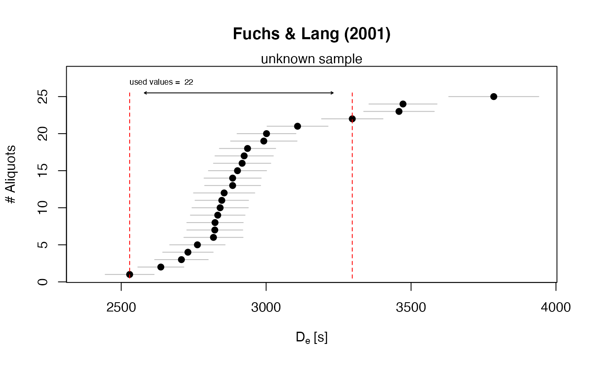

R/calc_FuchsLang2001.R
calc_FuchsLang2001.RdThis function applies the method according to Fuchs & Lang (2001) for heterogeneously bleached samples with a given coefficient of variation threshold.
calc_FuchsLang2001(data, cvThreshold = 5, startDeValue = 1, plot = TRUE, ...)
| data | RLum.Results or data.frame (required):
for data.frame: two columns with De |
|---|---|
| cvThreshold | numeric (with default):
coefficient of variation in percent, as threshold for the method,
e.g. |
| startDeValue | numeric (with default): number of the first aliquot that is used for the calculations |
| plot | logical (with default):
plot output |
| ... | further arguments and graphical parameters passed to plot |
Returns a plot (optional) and terminal output. In addition an RLum.Results object is returned containing the following elements:
data.frame summary of all relevant model results.
data.frame original input data
list used arguments
call the function call
data.frame containing the used values for the calculation
Used values
If the coefficient of variation (c[v]) of the first
two values is larger than the threshold c[v_threshold], the first value is
skipped. Use the startDeValue argument to define a start value for
calculation (e.g. 2nd or 3rd value).
Basic steps of the approach
Estimate natural relative variation of the sample using a dose recovery test
Sort the input values ascendantly
Calculate a running mean, starting with the lowermost two values and add values iteratively.
Stop if the calculated c[v] exceeds the specified cvThreshold
Please consider the requirements and the constraints of this method (see Fuchs & Lang, 2001)
0.4.1
Kreutzer, S., Burow, C., 2021. calc_FuchsLang2001(): Apply the model after Fuchs & Lang (2001) to a given De distribution.. Function version 0.4.1. In: Kreutzer, S., Burow, C., Dietze, M., Fuchs, M.C., Schmidt, C., Fischer, M., Friedrich, J., Mercier, N., Riedesel, S., Autzen, M., Mittelstrass, D., Gray, H.J., 2021. Luminescence: Comprehensive Luminescence Dating Data Analysis. R package version 0.9.11. https://CRAN.R-project.org/package=Luminescence
Fuchs, M. & Lang, A., 2001. OSL dating of coarse-grain fluvial quartz using single-aliquot protocols on sediments from NE Peloponnese, Greece. In: Quaternary Science Reviews 20, 783-787.
Fuchs, M. & Wagner, G.A., 2003. Recognition of insufficient bleaching by small aliquots of quartz for reconstructing soil erosion in Greece. Quaternary Science Reviews 22, 1161-1167.
Sebastian Kreutzer, Geography & Earth Sciences, Aberystwyth University (United Kingdom)
Christoph Burow, University of Cologne (Germany)
, RLum Developer Team
## load example data data(ExampleData.DeValues, envir = environment()) ## calculate De according to Fuchs & Lang (2001) temp<- calc_FuchsLang2001(ExampleData.DeValues$BT998, cvThreshold = 5)#> #> [calc_FuchsLang2001] #> #> ----------- meta data -------------- #> cvThreshold: 5 % #> used values: 22 #> ----------- dose estimate ---------- #> mean: 2866.11 #> sd: 157.35 #> weighted mean: 2846.66 #> weighted sd: 20.58 #> ------------------------------------ #>